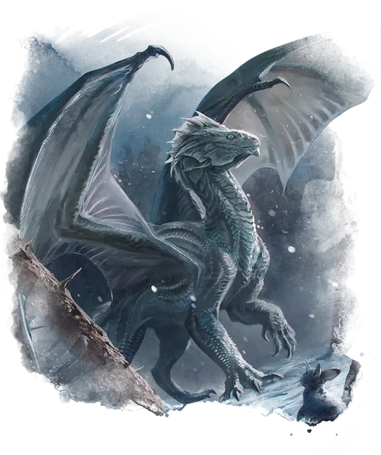

Вирмлинг серебряного дракона
Silver Dragon Wyrmling
Средний Дракон (Металлический), Принципиальный Добрый

Класс Защиты 17 Инициатива +2 (12)
Хиты 45 (6к8 + 18)
Скорость 30 футов, Полёта 60 футов
| мод | спас | ||
|---|---|---|---|
| СИЛ | 19 | +4 | +4 |
| ЛОВ | 10 | +0 | +2 |
| ТЕЛ | 17 | +3 | +3 |
| мод | спас | ||
|---|---|---|---|
| ИНТ | 12 | +1 | +1 |
| МДР | 11 | +0 | +2 |
| ХАР | 15 | +2 | +2 |
Иммунитеты Холод
Чувства Тёмное зрение 60 футов, пассивное Восприятие 14, Слепое зрение 10 футов
Языки Драконий
Опасность 2 (450 опыта; БВ +2)
Действия
Мультиатака. Дракон совершает две атаки Раздиранием.
Раздирание. Бросок рукопашной атаки: +6, досягаемость 5 фт. Попадание: 9 (1к10 + 4) Колющего урона.
Холодное дыхание (Перезарядка 5–6). Спасбросок Телосложения: Сл 13, каждое существо в 15-футовом Конусе. Провал: 18 (4к8) урона Холодом. Успех: Только половина урона.
Парализующее дыхание. Спасбросок Телосложения: Сл 13, каждое существо в 15-футовом Конусе. Первый провал: The цель получает состояние Недееспособный до конца её следующего хода; в конце её следующего хода цель повторяет этот спасбросок. Второй провал: Цель получает состояние Парализованный и повторяет спасбросок в конце каждого своего хода, при успехе оканчивая на себе этот эффект. Через 1 минуту цель автоматически преуспеет в этом спасброске.
Бонус мастерства +2
Среда обитания Город, Горы
Сокровища Магические
Серебряные драконы
Драконы отваги и справедливости
Серебряные драконы неустанно трудятся на тем, чтобы сохранять мир и вдохновлять других на великие свершения. Они стараются служить примером порядочности, при этом не смыкая глаз следя за проявлениями зла.
Как правило, серебряные драконы обитают среди заснеженных горных пиков, хотя амбиции и общительность приводят некоторых из них к жизни в больших, многолюдных городах. Приняв облик Гуманоидов, они заводят дружбу с художниками, историками, рыцарями и скромными правителями — теми, кто учится у прошлого, чтобы построить лучшее будущее.
Серебряные драконы черпают вдохновение в легендарных героях и сами вынашивают грандиозные замыслы. Многие собирают сокровища, отражающие эти интересы: исторические хроники, древние произведения искусства и снаряжение прославленных героев.
Вирмлинги серебряных драконов обычно живут с одним или обоими родителями либо наставниками, впитывая знания о мире и его прошлом, прежде чем начать самостоятельную жизнь.